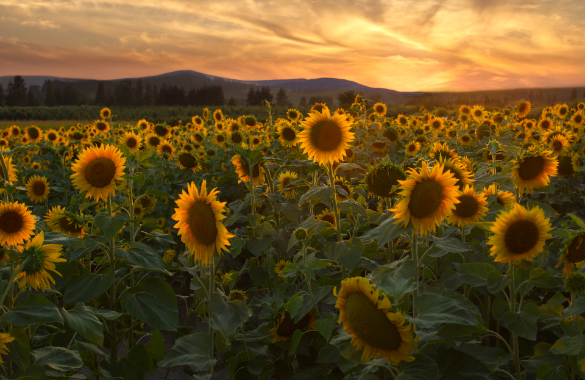

Зърнени култури от 40 000 декара в община Тунджа
Отглеждаме и търгуваме пшеница, ечемик, рапица, слънчоглед и царевица от полетата около Тенево и Маломир. Предлагаме също консултации, складиране и транспорт.
За нас
Фирмата
„Жекови-Тенево“ ЕООД произвежда и търгува със селскостопански култури в община Тунджа, област Ямбол. Обработваме над 40 000 декара земеделска земя в селата Тенево, Маломир и околностите, с бази и складове в Тенево и Маломир.
Производство
Основната ни дейност е отглеждане и продажба на зърнени и маслодайни култури: пшеница, ечемик, рапица, овес, слънчоглед и царевица. Част от производството ни е сертифицирано като биологично.
Накъде вървим
Продължаваме да увеличаваме обработваемата земя и да я обединяваме в големи масиви, за да работим по-ефективно.

- Екип от агрономи и оператори с дългогодишен опит
- Съвременна селскостопанска техника и оборудване
- Сертифицирано биологично производство
Услуги
С какво можем да помогнем на купувачи, земеделски производители и собственици на земя.
-
Продажба на зърно
Пшеница, ечемик, рапица, овес, слънчоглед и царевица — конвенционални и биологични, на едро от наши складове.
-
Агрономически консултации
Съвети за сеитбообращение, торене и растителна защита, включително за преминаване към биологично земеделие.
-
Складиране
Съхранение на зърно в базите ни в Тенево и Маломир.
-
Транспорт
Превоз на селскостопанска продукция от полето до склада или до купувача.
-
Наемаме земя
Имате земеделска земя в района? Свържете се с нас за договор за наем или аренда.
Продукти
Култури, които отглеждаме, и кога се прибира реколтата.
| Култура | Жътва |
|---|---|
| Ечемик | юни |
| Рапица | юни – юли |
| Пшеница | юли |
| Овес | юли |
| Слънчоглед | септември |
| Царевица | септември – октомври |
Биологично производство
Част от площите ни се стопанисват по правилата за биологично земеделие, без синтетични торове и пестициди. Производството е сертифицирано — при запитване предоставяме копие от сертификата.
Контакти
Обадете се или ни пишете за покупка на зърно, консултация или отдаване на земя.